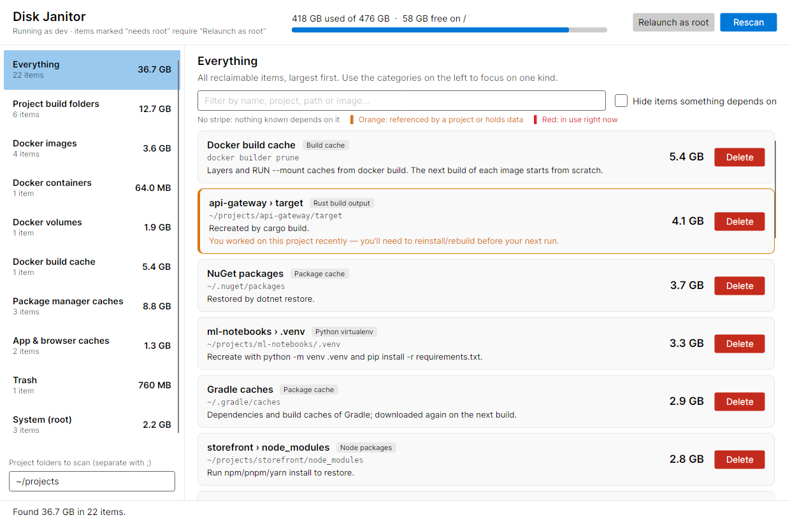
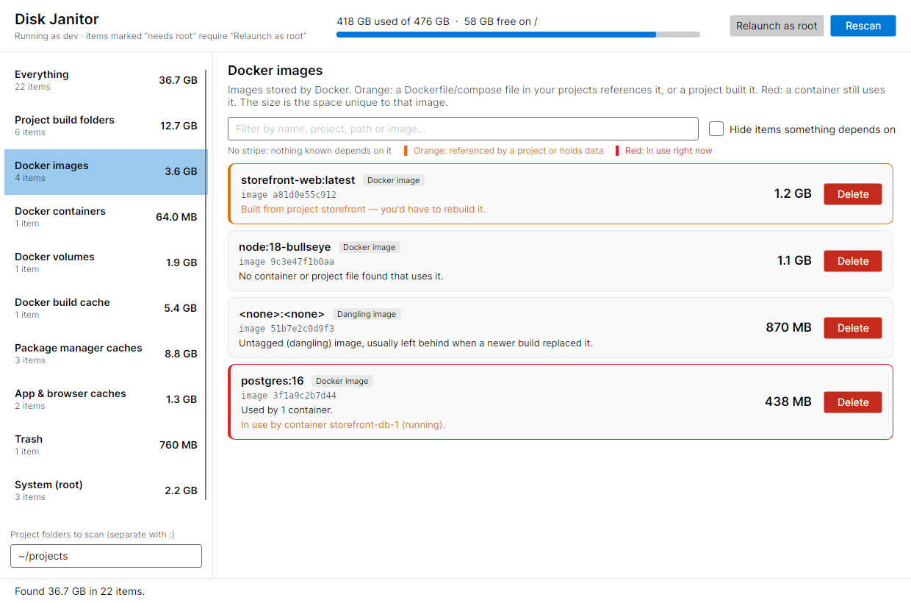
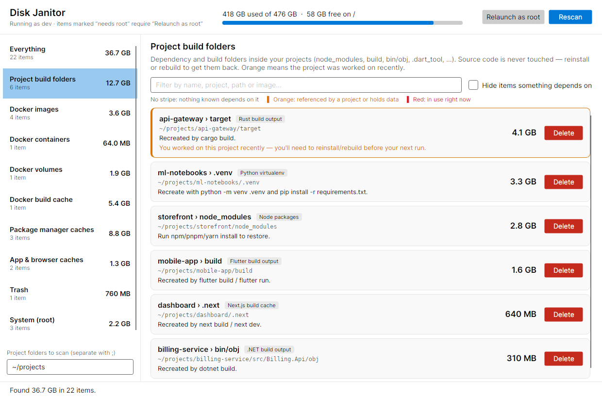

Get your disk back without guessing what breaks.
Disk Janitor finds the build folders, Docker leftovers and caches that fill up a developer's Linux machine. It tells you what each one is and what still depends on it, and deletes only what you pick.

Where the space usually goes
One scan covers your projects, Docker, package managers, apps, the Trash and system logs. This is the sample scan from the screenshots above.
Every item says what depends on it
Before you delete anything, Disk Janitor checks running containers, compose files, Dockerfiles and recent git activity. The stripe on each card tells you how careful to be.
No container or project file found that uses it.
No stripe: nothing known depends on it. Delete freely.
Named volume — may hold a project's database or uploads. Deleting it is permanent.
Orange: a project references it or it may hold data. Check first.
In use by container storefront-db-1 (running).
Red: in use right now. Deleting will fail or break something.
What it looks at
Source code is never touched. Everything listed can be rebuilt, downloaded again, or was already thrown away.
| Category | What's listed | How it's deleted |
|---|---|---|
| Project build folders | node_modules, build, dist, .next, bin/obj, .dart_tool, .gradle, target, .venv, vendor and more, under your project folders | Folder removed |
| Docker images | Each tag, with the containers using it and the Dockerfiles or compose files that reference or built it | docker rmi |
| Docker containers | All containers, with their compose project | docker rm |
| Docker volumes | Named and anonymous volumes, with compose project and attached containers | docker volume rm |
| Docker build cache | All build cache | docker builder prune -af |
| Package manager caches | npm, pnpm, NuGet, Gradle, pub, cargo, go, pip and more | Folder contents removed |
| App and browser caches | VS Code, Chrome, Mesa shaders, thumbnails and more | Folder contents removed |
| Trash | Home trash and .Trash-UID on mounted drives | Emptied |
| System (root) | Journal (keeps the newest 200 MB), apt cache, rotated logs, crash dumps, disabled snap revisions | journalctl --vacuum-size, apt-get clean, snap remove --revision |
Focus on one kind at a time
Pick a category on the left, filter by name or path, or hide everything something depends on.


Install
Every download is a self-contained binary for 64-bit Linux. Files for each version are on the releases page.
Debian and Ubuntu .deb
Download diskjanitor_<version>_amd64.deb from the latest release, then:
sudo apt install ./diskjanitor_*_amd64.deb
Adds Disk Janitor to your app menu.
Arch AUR
yay -S diskjanitor-bin
Or use any AUR helper, or makepkg.
Any distro AppImage
Download DiskJanitor-x86_64.AppImage, then:
chmod +x DiskJanitor-x86_64.AppImage ./DiskJanitor-x86_64.AppImage
Any distro tarball
Download DiskJanitor-linux-x64.tar.gz, then:
tar -xzf DiskJanitor-linux-x64.tar.gz ./DiskJanitor
Add --report to print a scan in the terminal without deleting anything. To clean system items, use Relaunch as root in the app. On Windows, it runs in WSL2 and cleans the Linux side; see the WSL notes for how to give the freed space back to Windows.